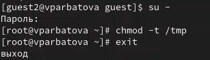

Изучение механизмов изменения идентификаторов, применения SetUID- и Sticky-битов. Получение практических навыков работы в кон- соли с дополнительными атрибутами. Рассмотрение работы механизма смены идентификатора процессов пользователей, а также влияние бита Sticky на запись и удаление файлов.
Теоретическое введение
Дополнительные атрибуты файлов Linux В Linux существует три основных вида прав — право на чтение (read), запись (write) и выполнение (execute), а также три категории пользователей, к которым они могут применяться — владелец файла (user), группа владельца (group) и все остальные (others). Но, кроме прав чтения, выполнения и записи, есть еще три дополнительных атрибута. [@u]
Sticky bit
Используется в основном для каталогов, чтобы защитить в них файлы. В такой каталог может писать любой пользователь. Но, из такой директории пользователь может удалить только те файлы, владельцем которых он является. Примером может служить директория /tmp, в которой запись открыта для всех пользователей, но нежелательно удаление чужих файлов.
SUID (Set User ID)
Атрибут исполняемого файла, позволяющий запустить его с правами владельца. В Linux приложение запускается с правами пользователя, запустившего указанное приложение. Это обеспечивает дополнительную безопасность т.к. процесс с правами пользователя не сможет получить доступ к важным системным файлам, которые принадлежат пользователю root.
SGID (Set Group ID)
Аналогичен suid, но относиться к группе. Если установить sgid для каталога, то все файлы созданные в нем, при запуске будут принимать идентификатор группы каталога, а не группы владельца, который создал файл в этом каталоге.
Обозначение атрибутов sticky, suid, sgid
Специальные права используются довольно редко, поэтому при выводе программы ls -l символ, обозначающий указанные атрибуты, закрывает символ стандартных прав доступа.
Пример: rwsrwsrwt
где первая s — это suid, вторая s — это sgid, а последняя t — это sticky bit
В приведенном примере не понятно, rwt — это rw- или rwx? Определить это просто. Если t маленькое, значит x установлен. Если T большое, значит x не установлен. То же самое правило распространяется и на s.
В числовом эквиваленте данные атрибуты определяются первым символом при четырехзначном обозначении (который часто опускается при назначении прав), например в правах 1777 — символ 1 обозначает sticky bit. Остальные атрибуты имеют следующие числовое соответствие:
1 — установлен sticky bit 2 — установлен sgid 4 — установлен suid Компилятор GCC GСС - это свободно доступный оптимизирующий компилятор для языков C, C++. Собственно программа gcc это некоторая надстройка над группой компиляторов, которая способна анализировать имена файлов, передаваемые ей в качестве аргументов, и определять, какие действия необходимо выполнить. Файлы с расширением .cc или .C рассматриваются, как файлы на языке C++, файлы с расширением .c как программы на языке C, а файлы c расширением .o считаются объектными [@gcc].
Выполнение лабораторной работы
Для лабораторной работы необходимо проверить, установлен ли компилятор gcc, комнда gcc -v позволяет это сделать. Также осуществляется отключение системы запретом с помощью setenforce 0
Проверка
Создаю файл и открываю его в редакторе nano
Создание файла
Текст файла
Текст файла
Компилирую файл, проверяю, запускаю, узнаю id
Работа с файлом
Текст второго файла
Текст файла
Повторяю операции со вторым файлом
Работа с файлом
С помощью chown изменяю владельца файла на суперпользователя, с помощью chmod изменяю права доступа
Изменение прав доступа
Сравниваю выводы, моя команда вывела меньше информации
Сравнение выводов
Текст файла
Текст файла
Создаю файл, открываю его в редакторе, компилирую, проверяю
Подготовка файла
Продолжаю изменять права от имени суперпользователя
Изменение прав
Пытаюсь от имени пользователя guest прочитать файл, не получается
Попытка прочесть файл
Пытаюсь прочесть файл с помощью нашего файла, получаю отказ в доступе
Попытка прочесть файл
Пытаюсь прочесть другой файл
Попытка прочесть файл
Пробуем прочесть эти же файлы от имени суперпользователя и чтение файлов проходит успешно
Чтение файлов
Проверяем папку tmp на наличие атрибута Sticky, т.к. в выводе есть буква t, то атрибут установлен
Атрибут установлен
От имени пользователя guest создаю файл с текстом, добавляю права на чтение и запись для других пользователей
Изменение прав
Вхожу в систему от имени пользователя guest2, от его имени могу прочитать файл file01.txt, но перезаписать информацию в нем не могу Также невозможно добавить в файл file01.txt новую информацию от имени пользователя guest2 Далее пробуем удалить файл, снова получаем отказ
Эксперименты
От имени суперпользователя снимаем с директории атрибут Sticky
Снятие атрибута
Проверяем, что атрибут действительно снят
Проверка
Далее был выполнен повтор предыдущих действий. По результатам без Sticky-бита запись в файл и дозапись в файл осталась невозможной, зато удаление файла прошло успешно
Эксперименты 2
Выводы
Изучила механизм изменения идентификаторов, применила SetUID- и Sticky-биты. Получила практические навыки работы в кон- соли с дополнительными атрибутами. Рассмотрела работы механизма смены идентификатора процессов пользователей, а также влияние бита Sticky на запись и удаление файлов.